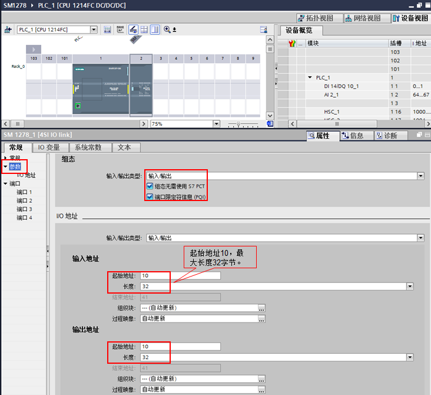
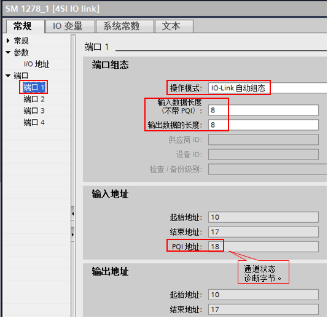
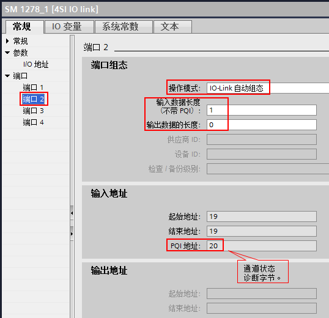
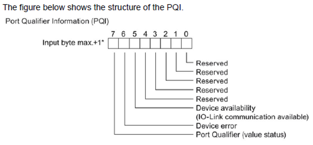
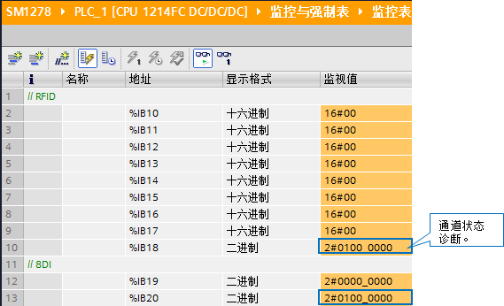
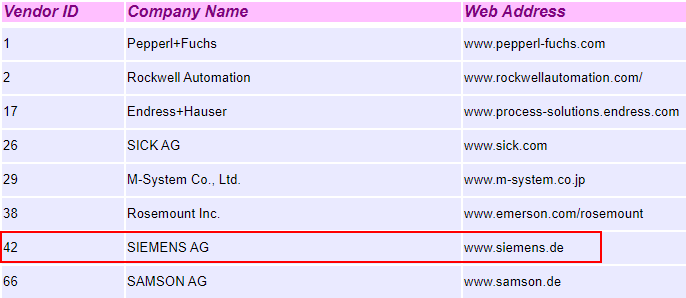
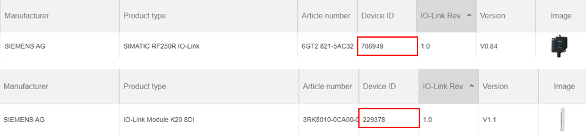

硬件：
① CPU 1214FC DC/DC/DC V4.4
② SM1278 V2.1（IO-Link 协议版本 V1.1）
③ 带 IO-Link 接口的 RF260R V1.0
④ IO-LINK MODULE K20，8DI-M8
软件：
① 本文中使用 TIA Portal STEP7 V16
硬件接线，请参考相关手册：
① SM1278 接线端子定义，参考下面链接中的手册，章节：A.12.1 SM 1278 4xIO-Link 主站
 按住 Shift 键时用鼠标点击下列链接，打开新浏览器窗口。
按住 Shift 键时用鼠标点击下列链接，打开新浏览器窗口。
https://support.industry.siemens.com/cs/cn/zh/view/109772940

图.01
② 带 IO-Link 接口的 RF260R 接线端子定义，参考下面链接中的手册，章节：9 连接电缆
 按住 Shift 键时用鼠标点击下列链接，打开新浏览器窗口。
按住 Shift 键时用鼠标点击下列链接，打开新浏览器窗口。
https://support.industry.siemens.com/cs/cn/zh/view/109747228

图.02
③ IO-LINK MODULE K20，8DI-M8 接线端子定义，参考下面链接
 按住 Shift 键时用鼠标点击下列链接，打开新浏览器窗口。
按住 Shift 键时用鼠标点击下列链接，打开新浏览器窗口。
https://support.industry.siemens.com/cs/cn/zh/view/29683449

图.03
打开 TIA Portal，组态 CPU 1214FC 和 SM1278 模块，设置为“组态无需使用 S7-PCT”，如图 4 所示：

图.04
注意：对于需要自动组态的 IO-Link 设备，请提前了解所连接设备的相关资料，确定在自动模式下，该设备所具备的功能和需要的 IO 地址长度。
需要注意：如果在“参数”页面中勾选“端口限定符信息（PQI）”，则每个端口所连接的 IO-Link 设备的输入地址将多占用1个字节。
本例中，使用的带 IO-Link 接口的 RF260R V1.0 在自动组态模式下需要8字节输入和8字节输出，返回的8字节输入为 RFID 标签中的 UID 值；IO-LINK MODULE K20，8DI-M8 是一个 8DI 模块，自动组态模式下需要1字节输入。
端口 1 连接带 IO-Link 接口的 RF260R V1.0，设置如图 5 所示：

图.05
端口 2 连接 IO-LINK MODULE K20，8DI-M8，设置如图 6 所示：

图.06
端口 3 和端口 4 未连接设备，则操作模式设置为“已禁用”。
将组态下载到 PLC 中，当一个 RFID 标签放到 RF260R 可识别范围内，可读取到标签的 UID；当 K20，8DI 有输入信号时，可查看 PLC 监控表，如图 7 所示：

图.07
通道状态诊断字节的说明，如图 8 所示：

图.08
当端口 1 和端口 2 的 IO-Link 设备断开时，查看诊断字节状态，如图 9 所示：

图.09
IO-Link 设备允许拥有一个区分设备类型的唯一标识码。这样可以检查设置是否正确，并在更换设备时自动进行参数设置。 两个识别码：
① 供应商 ID：设备制造商可以通过供应商 ID 来确定。
② 设备 ID：设备 ID 标识设备制造商范围内的设备类型。
除了使用 S7-PCT 的基本工具组态外，所有西门子的 IO-Link V1.1 主站系统都可以在不使用任何 IO-Link 组态工具的情况下进行调试。因此，必须在"IO-Link 手动组态" 操作模式中输入已连接的 IO-Link 设备的供应商 ID 和设备 ID。
如下链接说明了，如果通过手动组态，需要设备供应商 ID 和设备 ID。
 按住 Shift 键时用鼠标点击下列链接，打开新浏览器窗口。
按住 Shift 键时用鼠标点击下列链接，打开新浏览器窗口。
https://support.industry.siemens.com/cs/cn/zh/view/109748852
① 在上述链接中，文末提供了如何获取供应商 ID 的链接：
 按住 Shift 键时用鼠标点击下列链接，打开新浏览器窗口。
按住 Shift 键时用鼠标点击下列链接，打开新浏览器窗口。
https://io-link.com/share/Downloads/Vendor_ID_Table.xml
打开网页后，可以查看到各品牌的供应商 ID。本例中使用的产品为西门子产品，供应商 ID 为 42，如图 10 所示：

图.10
② 上述链接中，提供了如何获取设备 ID 的链接：
 按住 Shift 键时用鼠标点击下列链接，打开新浏览器窗口。
按住 Shift 键时用鼠标点击下列链接，打开新浏览器窗口。
https://ioddfinder.io-link.com/
打开网页后，可以通过设备的订货号进行查询。 本例中使用的产品为西门子产品，通过设备订货号可以查到设备 ID，如图 11 所示：

图.11
端口 1 连接带 IO-Link 接口的 RF260R V1.0，在"IO-Link 手动组态" 操作模式中输入供应商 ID 和设备 ID，设置如图 12 所示：

图.12
端口 2 连接 IO-LINK MODULE K20，8DI-M8，在"IO-Link 手动组态" 操作模式中输入供应商 ID 和设备 ID，设置如图 13 所示：

图.13
将通过"IO-Link 手动组态" 的组态下载到 PLC 中，同样可以在线监控到设备数据，结果与 “图.07” 相同。